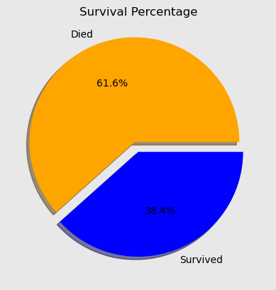

Pandas Project Showcase
About the Project
In this project I will use the Pandas library for Python in order to gain some insight into the availabale data about the passangers on Titanic.
In this project, I will use the following columns:
Pclass: The class of the ticket
Survived: This attribute indicates whether the passenger is alive or not.
Sex: The sex of the passager
Fare: Fare of the ticket
Embarked: Port where the passenger boarded the ship (C - Cherbourg, Q - Queenstown, S - Southampton)
Age: Age of the passenger
Pandas code
survival_counts = dataset['Survived'].value_counts()
labels = ['Died', 'Survived']
colors = ['orange', 'blue']
explode = (0.1, 0)
plt.pie(survival_counts, explode=explode, labels=labels, colors=colors, autopct='%1.1f%%', shadow=True)
plt.title('Survival Percentage')
plt.show()

survival_counts = dataset.groupby(['Sex', 'Survived']).size().unstack()
width = 0.35
x = range(2)
plt.bar(x, survival_counts[0], width, label='0', color='darkblue')
plt.bar([i + width for i in x], survival_counts[1], width, label='1', color='darkorange')
plt.title('Sex: Survived vs Dead')
plt.xlabel('Sex')
plt.ylabel('Count')
plt.xticks([i + width / 2 for i in x], ['female', 'male'])
plt.xticks(rotation=0)
plt.grid(axis='y', linestyle='--', alpha=0.3)
plt.legend()
survived_passengers = dataset[dataset['Survived'] == 1]
dead_passengers = dataset[dataset['Survived'] == 0]
age_bins = [0, 5, 10, 15, 20, 25, 30, 35, 40, 45, 50, 55, 60, 65, 70, 75, 80]
plt.hist(survived_passengers['Age'], bins=age_bins, color='blue', edgecolor='black', alpha=0.4, label='Survived')
plt.hist(dead_passengers['Age'], bins=age_bins, color='red', edgecolor='black', alpha=0.4, label='Died')
plt.xlabel('Age')
plt.ylabel('Frequency')
plt.xticks(age_bins)
plt.legend()
plt.show()

passenger_counts = dataset.groupby(['Embarked', 'Sex']).size().unstack()
x = range(3)
bar_width = 0.35
plt.bar(x, passenger_counts['male'], width=bar_width, label='male', color='skyblue', edgecolor='black', align='center')
plt.bar([i + bar_width for i in x], passenger_counts['female'], width=bar_width, label='female', color='lightcoral', edgecolor='black', align='center')
plt.title('Embarked splited female-male')
plt.xlabel('Embarked')
plt.ylabel('Count')
plt.xticks([i + bar_width / 2 for i in x], passenger_counts.index, rotation=0)
plt.legend(title='sex')
plt.show()
passenger_counts = dataset.groupby(['Pclass', 'Survived']).size().unstack()
x = range(3)
bar_width = 0.2
for i, pclass in enumerate(passenger_counts.columns):
plt.bar([m + i * bar_width for m in x], passenger_counts[pclass], width=bar_width, label=f'{i}', align='center', edgecolor='black')
plt.title('Pclass:Survived vs Dead')
plt.xlabel('Pclass')
plt.ylabel('Count')
plt.xticks([m + bar_width/2 for m in x], passenger_counts.index)
plt.grid(axis='y', linestyle='--', alpha=0.3)
plt.legend()
plt.show()